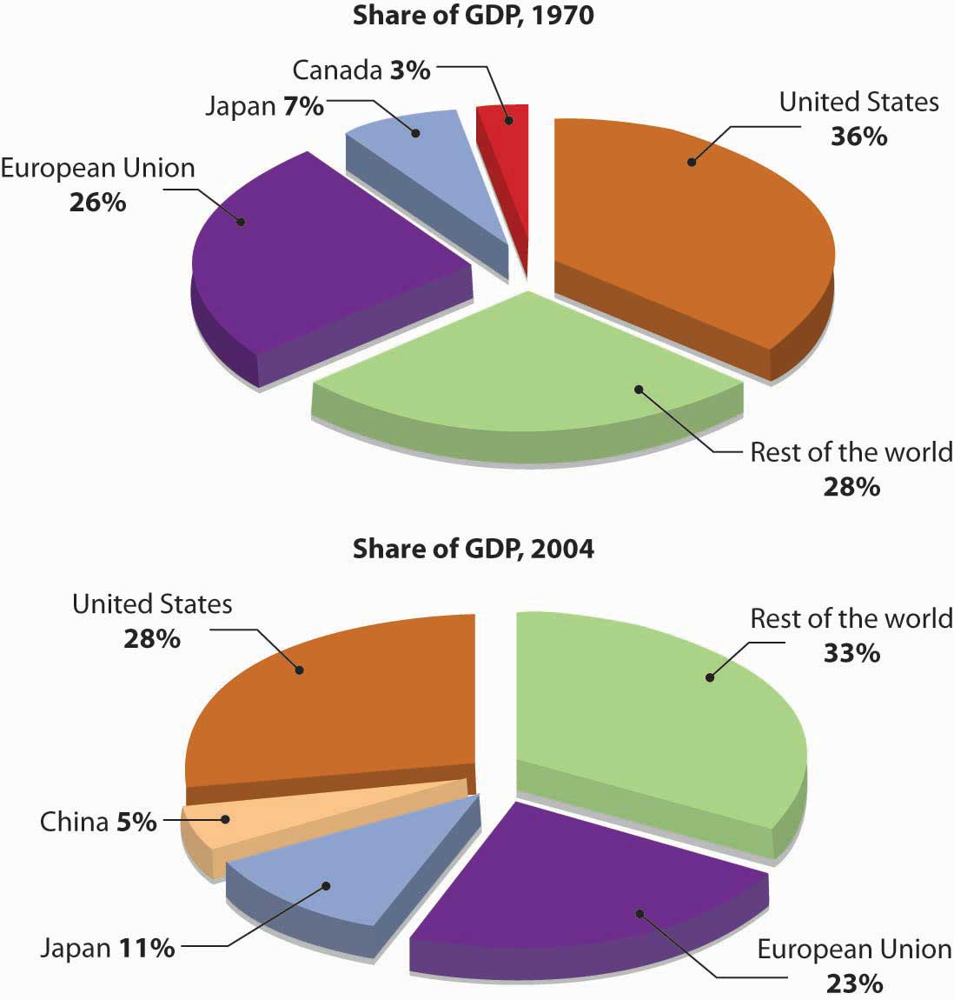

In the classic movie The Wizard of Oz, a magically misplaced Midwest farm girl takes a moment to survey the bizarre landscape of Oz and then comments to her little dog, “I don’t think we’re in Kansas anymore, Toto.” That sentiment probably echoes the reaction of many businesspeople who find themselves in the midst of international ventures for the first time. The differences between the foreign landscape and the one with which they’re familiar are often huge and multifaceted. Some are quite obvious, such as differences in language, currency, and everyday habits (say, using chopsticks instead of silverware). But others are subtle, complex, and sometimes even hidden. Success in international business means understanding a wide range of cultural, economic, legal, and political differences between countries. Let’s look at some of the more important of these differences.
Even when two people from the same country communicate, there’s always a possibility of misunderstanding. When people from different countries get together, that possibility increases substantially. Differences in communication styles reflect differences in cultureSystem of shared beliefs, values, customs, and behaviors that govern the interactions of members of a society.: the system of shared beliefs, values, customs, and behaviors that govern the interactions of members of a society. Cultural differences create challenges to successful international business dealings. We explain a few of these challenges in the following sections.
English is the international language of business. The natives of such European countries as France and Spain certainly take pride in their own languages and cultures, but nevertheless English is the business language of the European Community. Whereas only a few educated Europeans have studied Italian or Norwegian, most have studied English. Similarly, on the South Asian subcontinent, where hundreds of local languages and dialects are spoken, English is the official language. In most corners of the world, English-only speakers—such as most Americans—have no problem finding competent translators and interpreters. So why is language an issue for English speakers doing business in the global marketplace?
In many countries, only members of the educated classes speak English. The larger population—which is usually the market you want to tap—speaks the local tongue. Advertising messages and sales appeals must take this fact into account. More than one English translation of an advertising slogan has resulted in a humorous (and perhaps serious) blunder. Some classics are listed in Table 3.2 "Lost in Translation".
Table 3.2 Lost in Translation
| In Belgium, the translation of the slogan of an American auto-body company, “Body by Fisher,” came out as “Corpse by Fisher.” |
| Translated into German, the slogan “Come Alive with Pepsi” became “Come out of the Grave with Pepsi.” |
| A U.S. computer company in Indonesia translated “software” as “underwear.” |
| A German chocolate product called “Zit” didn’t sell well in the United States. |
| An English-speaking car-wash company in Francophone Quebec advertised itself as a “lavement d’auto” (“car enema”) instead of the correct “lavage d’auto.” |
| A proposed new soap called “Dainty” in English came out as “aloof” in Flemish (Belgium), “dimwitted” in Farsi (Iran), and “crazy person” in Korea; the product was shelved. |
| One false word in a Mexican commercial for an American shirt maker changed “When I used this shirt, I felt good” to “Until I used this shirt, I felt good.” |
| In the 1970s, GM’s Chevy Nova didn’t get on the road in Puerto Rico, in part because Nova in Spanish means “It doesn’t go.” |
| A U.S. appliance ad fizzled in the Middle East because it showed a well-stocked refrigerator featuring a large ham, thus offending the sensibilities of Muslim consumers, who don’t eat pork. |
Furthermore, relying on translators and interpreters puts you as an international businessperson at a disadvantage. You’re privy only to interpretations of the messages that you’re getting, and this handicap can result in a real competitive problem. Maybe you’ll misread the subtler intentions of the person with whom you’re trying to conduct business. The best way to combat this problem is to study foreign languages. Most people appreciate some effort to communicate in their local language, even on the most basic level. They even appreciate mistakes you make resulting from a desire to demonstrate your genuine interest in the language of your counterparts in foreign countries. The same principle goes doubly when you’re introducing yourself to non-English speakers in the United States. Few things work faster to encourage a friendly atmosphere than a native speaker’s willingness to greet a foreign guest in the guest’s native language.
Americans take for granted many of the cultural aspects of our business practices. Most of our meetings, for instance, focus on business issues, and we tend to start and end our meetings on schedule. These habits stem from a broader cultural preference: we don’t like to waste time. (It was an American, Benjamin Franklin, who coined the phrase “Time is Money.”) This preference, however, is by no means universal. The expectation that meetings will start on time and adhere to precise agendas is common in parts of Europe (especially the Germanic countries), as well as in the United States, but elsewhere—say, in Latin America and the Middle East—people are often late to meetings.
Likewise, don’t expect businesspeople from these regions—or businesspeople from most of Mediterranean Europe, for that matter—to “get down to business” as soon as a meeting has started. They’ll probably ask about your health and that of your family, inquire whether you’re enjoying your visit to their country, suggest local foods, and generally appear to be avoiding serious discussion at all costs. For Americans, such topics are conducive to nothing but idle chitchat, but in certain cultures, getting started this way is a matter of simple politeness and hospitality.
If you ever find yourself in such a situation, the best advice is to go with the flow and be receptive to cultural nuances. In high-context culturesCultures in which personal and family connections have an effect on most interactions, including those in business., the numerous interlocking (and often unstated) personal and family connections that hold people together have an effect on almost all interactions. Because people’s personal lives overlap with their business lives (and vice versa), it’s important to get to know your potential business partners as human beings and individuals.
By contrast, in low-context culturesCultures in which personal and work relationships are compartmentalized., such as those of the United States, Germany, Switzerland, and the Scandinavian countries, personal and work relationships are more compartmentalized: you don’t necessarily need to know much about the personal context of a person’s life to deal with him or her in the business arena.
Different cultures have different communication styles—a fact that can take some getting used to. For example, degrees of animation in expression can vary from culture to culture. Southern Europeans and Middle Easterners are quite animated, favoring expressive body language along with hand gestures and raised voices. Northern Europeans are far more reserved. The English, for example, are famous for their understated style and the Germans for their formality in most business settings. In addition, the distance at which one feels comfortable when talking with someone varies by culture. People from the Middle East like to converse from a distance of a foot or less, while Americans prefer more personal space.
Finally, while people in some cultures prefer to deliver direct, clear messages, others use language that’s subtler or more indirect. North Americans and most Northern Europeans fall into the former category and many Asians into the latter. But even within these categories, there are differences. Though typically polite, Chinese and Koreans are extremely direct in expression, while Japanese are indirect. This example brings up two important points. First, avoid lumping loosely related cultures together. We sometimes talk, for example, about “Asian culture,” but such broad categories as “Asian” are usually oversimplifications. Japanese culture is different from Korean, which is different from Chinese. Second, never assume that two people from the same culture will always act in a similar manner. Not all Latin Americans are casual about meeting times, not all Italians use animated body language, and not all Germans are formal.
In summary, learn about a country’s culture and use your knowledge to help improve the quality of your business dealings. Learn to value the subtle differences among cultures, but don’t allow cultural stereotypes to dictate how you interact with people from any culture. Treat each person as an individual and spend time getting to know what he or she is about.
If you plan to do business in a foreign country, you need to know its level of economic development. You also should be aware of factors influencing the value of its currency and the impact that changes in that value will have on your profits.
If you don’t understand a nation’s level of economic development, you’ll have trouble answering some basic questions, such as, Will consumers in this country be able to afford the product I want to sell? How many units can I expect to sell? Will it be possible to make a reasonable profit?
A country’s level of economic development is related to its standard of living, which can be evaluated using an economic indicator called gross national income (GNI) per capitaEstimate of each citizen’s share of national income.. To calculate GNI per capita, we divide the value of all goods and services produced in a country (its GNI) by its average population, to arrive at an estimate of each citizen’s share of national income.
The World Bank, which lends money for improvements in underdeveloped nations, uses per-capita GNI to divide countries into four income categories:World Bank Group, “Country Classification,” Data and Statistics, http://www.worldbank.org/data/countryclass/countryclass.html (accessed May 25, 2006).
As you can see from Figure 3.9 "The World’s Wealth, 1970 and 2004", a large portion of the world’s wealth remains concentrated in just a few areas. Remember, however, that even though a country has a low GNI per capita, it can still be an attractive place for doing business. India, for example, is a lower-middle-income country, yet it has a population of a billion, and a segment of that population is well educated—an appealing feature for many business initiatives.
Figure 3.9 The World’s Wealth, 1970 and 2004
The long-term goal of many countries is to move up the economic development ladder. Some factors conducive to economic growth include a reliable banking system, a strong stock market, and government policies to encourage investment and competition while discouraging corruption. It’s also important that a country have a strong infrastructure—its systems of communications (telephone, Internet, television, newspapers), transportation (roads, railways, airports), energy (gas and electricity, power plants), and social facilities (schools, hospitals). These basic systems will help countries attract foreign investors, which can be crucial to economic development.
If every nation used the same currency, international trade would be a lot easier. Unfortunately, this is not the case. Let’s say that your business is importing watches from Switzerland. Because the watchmaker will want to be paid in Swiss francs, you have to figure out how many U.S. dollars you’ll need to buy the francs with which to pay the watchmaker. You’d start by finding out the exchange rate between the Swiss franc and the U.S. dollar. The exchange rateValue of one currency relative to another. tells you how much one currency is worth relative to another currency. So you need to know the value of the Swiss franc relative to the U.S. dollar.
You could simply look in a newspaper or go to any number of Web sites—say, http://www.oanda.com. Remember, however, that the exchange rate changes frequently. To keep things simple, let’s assume that the exchange rate is 1 Swiss franc = $0.81 U.S. (that is, 1 Swiss franc is worth $0.81). Let’s also assume that you owe the Swiss watchmaker 1,000 francs. Doing some quick math, you figure that it will take $810 to buy 1,000 francs (1,000 francs × the exchange rate of $0.81 = $810).
Now let’s say that you don’t have the cash flow to pay the watchmaker for two weeks. When you check the exchange rate two weeks later, you find that it has changed to 1 Swiss franc = $0.85. Are you better off or worse off? It’s easy to check: 1,000 francs × the new exchange rate of $0.85 = $850. You’ve just learned the hard way that when the value of the franc relative to the dollar goes up, it costs you more to buy something from Switzerland. You probably can’t help but wonder what would have happened if the value of the franc relative to the dollar had gone down—say, to $0.72 per franc. At this rate, you’d need only $720 to pay the 1,000 francs (1,000 × $0.72). In other words, when the value of the franc relative to the dollar drops, it costs less to buy goods from Switzerland. In sum you’ve learned the following:
In the interest of being thorough, let’s look at this phenomenon from the perspective of an American seller and a Swiss buyer. First, we need to know the exchange rate for the U.S. dollar relative to the franc, which happens to be $1 U.S. = 1.23 francs. This means that if you want to sell something—let’s say your latest painting—for $1,000 U.S. to an art lover in Switzerland, the Swiss buyer will need 1,230 francs to get the $1,000 needed to pay you. If the exchange rate were $1 U.S. = 1.40 francs, the cost of the painting would be $1,400. So now you also know the following:
One of the more difficult aspects of doing business globally is dealing with vast differences in legal and regulatory environments. The United States, for example, has an established set of laws and regulations that provide direction to businesses operating within its borders. But because there is no global legal system, key areas of business law—for example, contract provisions and copyright protection—can be treated in different ways in different countries. Companies doing international business often face many inconsistent laws and regulations. To navigate this sea of confusion, American businesspeople must know and follow both U.S. laws and regulations and those of nations in which they operate.
The annals of business history are filled with stories about American companies that have stumbled in trying to comply with foreign laws and regulations. Coca-Cola, for example, ran afoul of Italian law when it printed its ingredients list on the bottle cap rather than on the bottle itself. Italian courts ruled that the labeling was inadequate because most people throw the cap away. In another case, 3M applied to the Japanese government to create a joint venture with the Sumitomo Industrial Group to make and distribute magnetic tape products in Japan. 3M spent four years trying to satisfy Japan’s complex regulations, but by the time it got approval, domestic competitors, including Sony, had captured the market. By delaying 3M, Japanese regulators managed, in effect, to stifle foreign competition.David Ricks, Blunders in International Business (Malden, MA: Blackwell, 1999), 137.
One approach to dealing with local laws and regulations is hiring lawyers from the host country who can provide advice on legal issues. Another is working with local businesspeople who have experience in complying with regulations and overcoming bureaucratic obstacles.
One U.S. law that creates unique challenges for American firms operating overseas is the Foreign Corrupt Practices Act (FCPA), which prohibits the distribution of bribes and other favors in the conduct of business. Unfortunately, though they’re illegal in this country, such tactics as kickbacks and bribes are business-as-usual in many nations. According to some experts, American businesspeople are at a competitive disadvantage if they’re prohibited from giving bribes or undercover payments to foreign officials or businesspeople who expect them; it’s like asking for good service in a restaurant when the waiter knows you won’t be giving a tip. In theory, because the FPCA warns foreigners that Americans can’t give bribes, they’ll eventually stop expecting them.
Where are American businesspeople most likely and least likely to encounter bribe requests and related forms of corruption? Transparency International, an independent German-based organization, annually rates nations according to “perceived corruption,” which it defines as “the abuse of public office for private gain.” Table 3.3 "Corruptibility Around the World, 2004" excerpts the 2004 rankings.
Table 3.3 Corruptibility Around the World, 2004
| Rank | Country | CPI Score* |
|---|---|---|
| 1 | Finland | 9.7 |
| 2 | New Zealand | 9.6 |
| 3 | Denmark | 9.5 |
| Iceland | 9.5 | |
| 5 | Singapore | 9.3 |
| 6 | Sweden | 9.2 |
| 7 | Switzerland | 9.1 |
| 8 | Norway | 8.9 |
| 9 | Austria | 8.8 |
| 10 | Netherlands | 8.7 |
| 17 | Belgium | 7.5 |
| Ireland | 7.5 | |
| United States | 7.5 | |
| 133 | Congo, Democratic Republic | 2.0 |
| Côte d’Ivoire | 2.0 | |
| Georgia | 2.0 | |
| Indonesia | 2.0 | |
| Tajikistan | 2.0 | |
| Turkmenistan | 2.0 | |
| 140 | Azerbaijan | 1.9 |
| Paraguay | 1.9 | |
| 142 | Chad | 1.7 |
| Myanmar | 1.7 | |
| 144 | Nigeria | 1.6 |
| 145 | Bangladesh | 1.5 |
| Haiti | 1.5 | |
| *A score of 10 means that a country is squeaky clean. Anything under 3 means that corruption is rampant. | ||
(AACSB) Communication
After five years at a large sporting-goods company, your boss has asked you to spend six months managing the firm’s new office in Rio de Janeiro. It’s a good opportunity, but, unfortunately, you know absolutely nothing about life or anything else in Brazil. So, to get some advice on how to work and socialize with Brazilian businesspeople, you decide to do some online research. You’re particularly interested in understanding cultural differences in communication styles, dress, time, and sociability. To learn more about Brazilian businesspeople, go to these helpful sites:
Write a brief report to summarize what you learned about cultural differences between U.S. and Brazilian businesspeople.
(AACSB) Ethics
You’re a partner in a U.S. engineering firm that’s interested in bidding on a water-treatment project in China. You know that firms from two other countries—Malaysia and Italy—will submit bids. The U.S. Foreign Corrupt Practices Act forbids you from making any payment to Chinese officials to enlist their help in getting the job. Unfortunately, the governments of Malaysia and Italy don’t prohibit local firms from offering bribes. Are you at a disadvantage? Should the Foreign Corrupt Practices Act be repealed? Why, or why not?
(AACSB) Ethics
You’re the CEO of a multinational corporation and one-fourth of your workforce is infected with AIDS. If you had the means to help your workers and their families, would you do it? This is not strictly a hypothetical question: it’s one that’s faced by CEOs of multinational corporations with operations in Africa, parts of China, and India. To find out what some of them have decided, go to the BusinessWeek Web site (http://www.businessweek.com/magazine/content/04_31/b3894116_mz018.htm) and read the article “Why Business Should Make AIDS Its Business.” Then, answer the following questions: